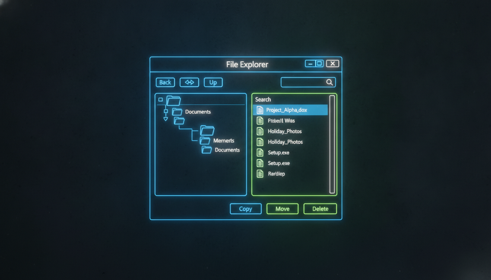

Двопанельний провідник, дерева, списки

public ref class FileManagerForm : public Form {
private:
TreeView^ folderTree;
ListView^ fileList;
TextBox^ pathBox;
ImageList^ imageList;
public:
FileManagerForm() {
this->Text = "Файловий менеджер";
this->Size = Size(900, 600);
// SplitContainer
SplitContainer^ split = gcnew SplitContainer();
split->Dock = DockStyle::Fill;
split->SplitterDistance = 250;
// Дерево папок
folderTree = gcnew TreeView();
folderTree->Dock = DockStyle::Fill;
folderTree->AfterSelect += gcnew TreeViewEventHandler(
this, &FileManagerForm::OnFolderSelect);
split->Panel1->Controls->Add(folderTree);
// Список файлів
fileList = gcnew ListView();
fileList->Dock = DockStyle::Fill;
fileList->View = View::Details;
fileList->Columns->Add("Ім'я", 200);
fileList->Columns->Add("Розмір", 100);
fileList->Columns->Add("Тип", 100);
fileList->Columns->Add("Змінено", 150);
fileList->DoubleClick += gcnew EventHandler(
this, &FileManagerForm::OnFileOpen);
split->Panel2->Controls->Add(fileList);
this->Controls->Add(split);
// Заповнення дерева
PopulateFolderTree();
}
void PopulateFolderTree() {
TreeNode^ root = gcnew TreeNode("Комп'ютер");
foreach(String^ drive in Environment::GetLogicalDrives()) {
TreeNode^ driveNode = gcnew TreeNode(drive);
driveNode->Tag = drive;
root->Nodes->Add(driveNode);
try {
foreach(String^ dir in Directory::GetDirectories(drive)) {
TreeNode^ dirNode = gcnew TreeNode(Path::GetFileName(dir));
dirNode->Tag = dir;
driveNode->Nodes->Add(dirNode);
}
} catch(...) {}
}
folderTree->Nodes->Add(root);
root->Expand();
}
void OnFolderSelect(Object^ s, TreeViewEventArgs^ e) {
String^ path = (String^)e->Node->Tag;
if (path == nullptr) return;
fileList->Items->Clear();
try {
// Папки
foreach(String^ dir in Directory::GetDirectories(path)) {
ListViewItem^ item = gcnew ListViewItem(Path::GetFileName(dir));
item->SubItems->Add("");
item->SubItems->Add("Папка");
item->SubItems->Add(
Directory::GetLastWriteTime(dir).ToString());
fileList->Items->Add(item);
}
// Файли
foreach(String^ file in Directory::GetFiles(path)) {
FileInfo^ fi = gcnew FileInfo(file);
ListViewItem^ item = gcnew ListViewItem(fi->Name);
item->SubItems->Add(FormatSize(fi->Length));
item->SubItems->Add(fi->Extension);
item->SubItems->Add(fi->LastWriteTime.ToString());
fileList->Items->Add(item);
}
} catch(Exception^ ex) {
MessageBox::Show(ex->Message);
}
}
String^ FormatSize(long long bytes) {
if (bytes < 1024) return bytes + " B";
if (bytes < 1024*1024) return (bytes/1024) + " KB";
return (bytes/(1024*1024)) + " MB";
}
};